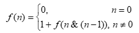

Мета: Сформувати декларативне мислення в галузі програмування завдяки використанню чистих функцій, рекурсій замість циклів, запобіганню даних, що змінюються. Опанувати застосування рекурсивних функцій для обчислювальних процесів.
Вибір середовища та мови функціонального програмування
Для виконання лабораторної роботи було обрано мову Racket. У якості IDE було обрано онлайн компілятор JsFiddle, через простоту та зручность.
Ввести ціле число n в десятковій системі числення з клавіатури. Перевести його у двійкову систему. Знайти кількість одиниць в двійковому представленні числа n, використовуючи рекурентне означення функції f(n), де символ & означує операцію побітового логічного множення:

Реалізувати рекурсивний варіант розв'язку задачі. Визначити глибину рекурсії.
(define (nums1 n)
; Якщо 0, то завершуємо
(if (= n 0)
0
; Вводимо лічильник кіл-ті одиниць, все інше прибираємо
(+ 1 (nums1 (bitwise-and n (- n 1))))))
(nums1 3)
Потрібно сплатити поштове відправлення, вартість котрого складає m копійок, а в наявності тільки поштові марки номіналом x, y, z копійок. Скількома різними способами можна сплатити поштове відправлення? Розробити рекурсивну функцію для обчислення кількості зображень числа m у вигляді суми певних фіксованих чисел з використанням рекурентних співвідношень. Використати рекурентне співвідношення для чисел Фібоначчі.

(define (marks m x y z)
; Обраховуємо кількість представлень марками
(define (show-groups n-vars)
(cond
((= n-vars 3) x)
((= n-vars 2) y)
((= n-vars 1) z)))
(define (count-marks amount n-vars)
; Умови виходу чи продовження рекурсії.
(cond
;Якщо немає залишку, то +1 до числа можливих варіантів представлення суми .
((= amount 0) 1)
; 0, якщо не можна виразити суму заданими числами, то повертаємо 0
((or (< amount 0) (= n-vars 0)) 0)))
(count-marks m 3))
У ході виконання даної лабораторної роботи було реалізовано програму, що переводить вхідне число в двійкову систему, а потім рахує кількість одиничок; також було реалізовано програму, що виводить на екран кількість можливих способів представлення суми